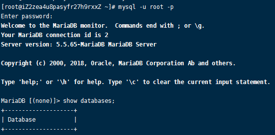
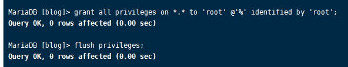

003-在centos安装
centos7以后已经不支持mysql，需要使用替换品maria DB
1、在centos上安装mariaDB
执行mysql -u root -p，无需密码即可进入mysql服务

2、远程连接mariaDB
使用mysql可视化工具访问的时候，一直访问失败，可以按照下面进行排查
- 阿里云服务器是否开启3306端口访问出入
- mysql数据库默认不支持远程连接，需要进入mysql命令行后执行下面代码
grant all privileges on *.* to 'root'@'%' identified by 'root'; flush privileges;
- 因为mariaDB按照后默认root不用密码，但是远程连接必须用密码。我们进入mysql命令行
use mysql; UPDATE user SET password=password('123456') WHERE user='root'; // 设置密码 flush privileges; // 刷新mysqlroot/123456去登陆既可以了
2、mariaDB存中文乱码
- 修改
client.cnf配置vim /etc/my.cnf.d/client.cnf[client]的地方，新加配置default-character-set=utf8，如下:[client] default-character-set=utf8
修改
server.cnf配置vim /etc/my.cnf.d/server.cnf找到
[mysqld]的地方，新加配置如下:[mysqld] init_connect = 'SET collation_connection = utf8_general_ci' init_connect = 'SET NAMES utf8' character_set_server = utf8 collation_server = utf8_general_ci [mysqld_safe] init_connect = 'SET collation_connection = utf8_general_ci' init_connect = 'SET NAMES utf8' character_set_server = utf8 collation_server = utf8_general_ci重启服务
systemctl restart mariadb.service在进入mysql，执行
SHOW VARIABLES LIKE 'character%';查看下字符集都是utf8了